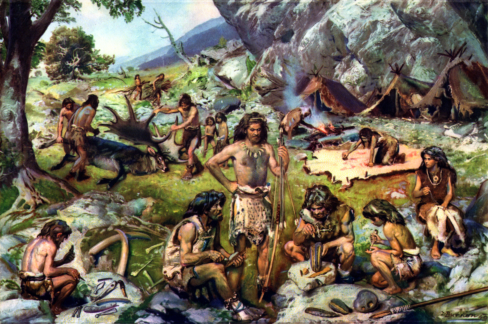
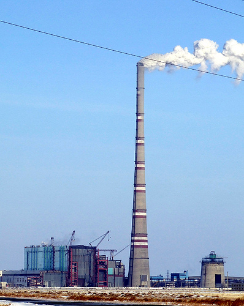
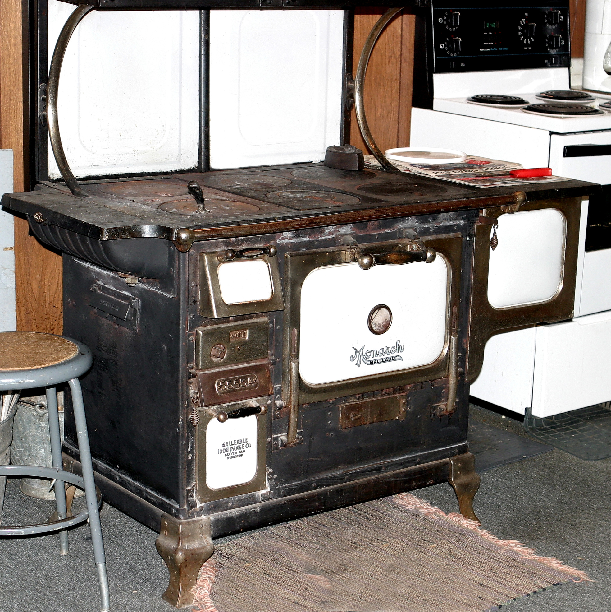
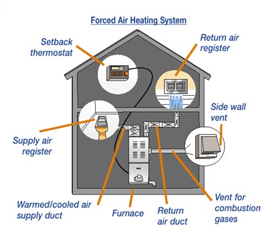
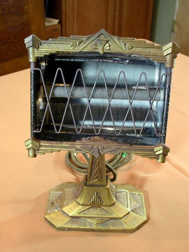
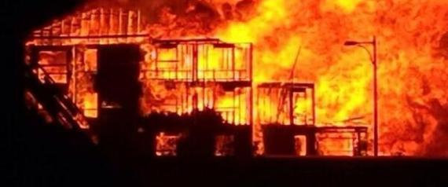
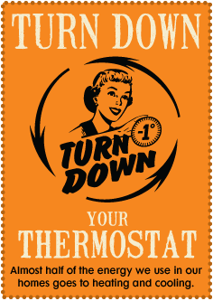

layout: false
class: center, middle, inverse
# Topic 1: Using Energy from Heat
### www.drpineda.ca
---
name: base
layout: true
---
# Human use of thermal energy
Thermal energy (heat) has been used throughout human history to cook and keep warm.
---
# Human heat-related technologies
## 2.5 million years ago - 10,000 BP: Fire

---
# Human heat-related technologies
## 100 BC: Hypocaust heating
Ancient Roman system of underfloor heating, used to heat houses with hot air.
---
# Human heat-related technologies
## 1200 AD: Chimneys

---
# Human heat-related technologies
## 1700 AD: Iron stove

---
# Human heat-related technologies
## 1800 AD: Forced air heating

---
# Human heat-related technologies
## 1906 AD: Electric heat

---
# Does heat affect you?
- Furnaces, air conditioners
- Stoves, microwave ovens, freezers
- Manufactured goods: cars, plastic goods
- Being able to control heat makes our lives more comfortable
But what is the cost?
---
class: inverse
background-image: url(images/igloo.jpg)
# This does not look warm?
---
# How do igloos and sod huts keep you warm?
Sod huts and igloos (or quinzhees) act as insulators and trap heat inside from fires or body heat.
---
# The heat is on...
Humans have learned efficient ways to heat homes and cook food etc.
- kettles to boil water
- furnaces
- use electricity or gas to create heat
How do you use energy in your house?
---
# A hot topic
Controlling heat has always been an issue for humans.
- cooking
- heating homes, cars
- industrial applications

---
# It takes energy
- Energy is required to create heat.
- What can be used as a source of energy?
- Renewable or non-renewable?
Cost and benefit of each source?
---
# Think about it...
Turning down the thermostat in your house can reduce the amount of energy we use by $1-3\%$. Imagine if we combine the savings of the entire class…the entire school?
It all makes a difference!

---
# What do you know about temperature?
---